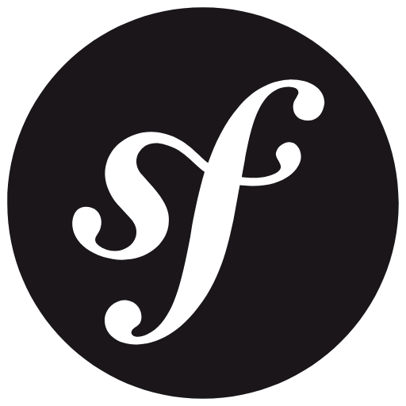
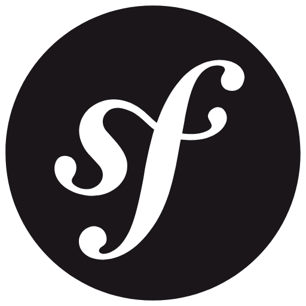

Ici vous retrouverez tout mon parcours professionnel et mes projets que j'ai pu réaliser. Bonne visite !
Je m'appelle Loïs MARTEEL, j'ai 19 ans et je suis étudiant en développement web à MyDigitalSchool Montpellier. Par la suite, je souhaite devenir développeur full-stack.
Je suis à la recherche d'un stage pour le mois d'avril et d'une alternance pour septembre.
N'hésitez pas à regarder mon CV et mes projets !


 

Création du site vitrine du club de handball HBC Cavaillon pendant un stage de deux mois avec un camarade.
Avec une camarade, j'ai réalisé un test de positionnement pour téléphone pour mon école, MyDigitalSchool.

Pour un projet fil rouge d'école, j'ai réalisé le site vitrine pour présenter notre application.
Réalisé avec deux camarades, nous avons créé un site fictif d'achat de montres de luxe, en partant de la maquette jusqu'au développement.
Pour un projet d'école, nous avons développé, avec deux camarades, une webapp permettant de créer des profils et d'y ajouter des cartes pour parler de nos derniers livres lus, films vus etc.

Pour mes partiels de deuxième année, j'ai fait des recherches sur quel est le meilleur framework pour une application web.

Été 2024
J'ai travaillé deux mois en temps qu'intérimaire dans la manutention chez Provence Vivarais. Ce travail m'a permis d'en apprendre plus sur la mentalité du travail à la chaîne.
Avril/Mai 2024
Comme expliqué dans mes projets, j'ai réalisé un stage avec un camarade pour refaire le site internet du club de handball de Cavaillon. Ce furent mes premiers pas dans le monde professionnel du développement web.

Été 2022 - 2023
J'ai travaillé deux étés dans la petite entreprise Provefel, un grossiste de fruits et légumes. Ce furent mes premiers pas dans le monde professionnel et ce fut très enrichissant.